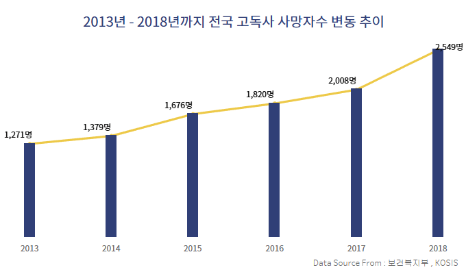

보건복지부에 따르면 지난해 고독사 사망자 수는 2,549명으로 집계됐다. 고독사 사망자 수는 ▲2013년(1,271명) ▲2014년(1,379명) ▲2015년(1,676명) ▲2016년(1,820명) ▲2017년(2,008명) 순으로 매해 증가하고 있다.
현재 우리나라에는 고독사에 대한 정확한 수치나 통계가 없다. 통계청과 보건복지부의 1인 가구 현황 및 무연고 사망자 통계 등을 통해 간접적으로 고독사 수치를 가늠하고 있을 뿐이다.